대기환경산업기사 (2020-06-06 기출문제)
1과목: 대기오염개론
1. 대기오염과 관련되 설명으로 옳지 않은 것은?
- 멕시코의 포자리카 사건은 황화수소의 누출에 의해 발생한 것이다.
- 카보닐황은 대류권에서 매우 안정하기 때문에 거의 화학적인 반응을 하지 않는다.
- 대기 중의 황화수소(H2S)는 거의 대부분 OH에 의해 산화제거되며, 그 결과 SO2를 생성한다.
- 도노라 사건은 포자리카 사건 이후에 발생하였으며 1차 오염물질에 의한 사건이다.
(정답률: 82%)

2. 보기와 같은 연기의 형태로 가장 적합한 것은?
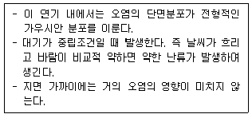
- 부채형
- 원추형
- 환상형
- 지붕형
(정답률: 77%)
3. 온실효과에 관한 설명으로 옳지 않은 것은?
- 온실효과에 대한 기여도(%)는 CH4＞N2O이다.
- CO2의 주요 흡수파장영역은 35∼40㎛ 정도이다.
- O3의 주요 흡수파장영역은 9∼10㎛ 정도이다.
- 가시광선은 통과시키고 적외선을 흡수해서 열을 밖으로 나가지 못하게 함으로써 보온작용을 하는 것을 대기의 온실효과라고 하다.
(정답률: 66%)
4. 지상 25m에서의 풍속이 10m/s일 때 지상 50m에서의 풍속(m/s)은? (단, Deacon식을 이용하고, 풍속지수는 0.2를 적용한다.)
- 약 10.8
- 약 11.5
- 약 13.2
- 약 16.8
(정답률: 71%)
5. 비스코스 섬유제조 시 주로 발생하는 무색의 유독한 휘발성 액체이며, 그 불순물은 불쾌한 냄새를 갖고 있는 대기오염물질은?
- 암모니아(NH3)
- 일산화탄소(CO)
- 이황화탄소(CS2)
- 폼알데하이드(HCHO)
(정답률: 75%)
6. NOx의 피해에 관한 설명으로 옳은 것은?
- 저항성이 약한 식물로는 담배, 해바라기 등이 있다.
- 식물에는 별로 심각한 영향을 주지 않으나 주 지표식물로는 아스파라거스, 명아주 등이 있다.
- 잎가장자리에 주로 흰색 또는 은백색 반점을 유발하고, 인체독성보다 식물의 고목에 민감한 편이다.
- 스위트피가 주 지표식물이며, 인체독성보다 식물의 고엽, 성숙한 잎에 민감한 편이며, 0.2ppb 정도에서 큰 영향을 끼친다.
(정답률: 61%)
7. 지구대기의 연직구조에 관한 설명으로 옳지 않은 것은?
- 중간권은 고도증가에 따라 온도가 감소한다.
- 성층권 상부의 열은 대부분 오존에 의해 흡수된 자외선 복사의 결과이다.
- 성층권은 라디오파의 송수신에 중요한 역할을 하며, 오로라가 형성되는 층이다.
- 대류권은 대기의 4개층(대류권, 성층권, 중간권, 열권) 중 가장 얇은 층이다.
(정답률: 74%)
8. 대기의 특성과 관련된 설명으로 옳지 않은 것은?
- 공기는 약 0∼50℃의 온도범위 내에서 보통 이상기체의 법칙을 따른다.
- 공기의 절대습도란 이론적으로 함유된 수증기 또는 물의 함량을 말하며 단위는 %이다.
- 대기안정도와 난류는 대기경계층에서 오염물질의 확산정도를 결정하는 중요한 인자이다.
- 지표면으로부터의 마찰효과가 무시될 수 있는 층에서 기압경도력과 전향력의 평형에 의하여 이루어지는 바람을 지균풍이라고 한다.
(정답률: 73%)
9. 유효 굴뚝높이 120m인 굴뚝으로부터 배출되는 SO2가 지상 최대의 농도를 나타내는 지점(m)는? (단, sutton의 식 적용, 수평 및 수직 확산계수는 0.⑤, 안정도계수(n)는 0.25)
- 약 4457
- 약 5647
- 약 6824
- 약 7296
(정답률: 47%)
10. R.W. Moncrieff와 J.E. Ammore가 지적한 냄새물질의 특성과 거리가 먼 것은?
- 아민은 농도가 높으면 암모니아 냄새, 낮으면 생선냄새를 나타낸다.
- 냄새가 강한 물질은 휘발성이 높고, 또 화학반응성이 강한 것이 많다.
- 동족체에서는 분자량이 클수록 강하지만 어는 한계 이상이 되면 약해진다.
- 원자가가 낮고, 금속성물질이 냄새가 강하고, 비금속물질이 냄새는 약하다.
(정답률: 67%)
11. 다음 설명과 관련된 복사법칙으로 가장 적합한 것은?
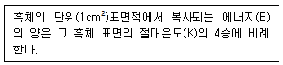
- 비인의 법칙
- 알베도의 법칙
- 플랑크의 법칙
- 스테판-볼츠만의 법칙
(정답률: 81%)
12. 광화학적 스모그(smog)의 3대 생성요소와 가장 거리가 먼 것은?
- 자외선
- 염소(Cl2)
- 질소산화물(NOx)
- 올레핀(Olefin)계 탄화수소
(정답률: 85%)
13. 다음 가스성분 중 일반적으로 대기 내의 체류시간이 가장 짧은 것은? (단, 표준상태 0℃, 760mmHg 건조공기)
- CO
- CO2
- N2O
- CH4
(정답률: 62%)
14. 다음은 입자 빛산란의 적용 결과에 관한 설명이다. ( )안에 알맞은 것은?
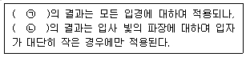
- ㉠ Mie, ㉡ Rayleigh
- ㉠ Rayleigh, ㉡ Mie
- ㉠ Maxwell, ㉡ tyndall
- ㉠ tyndall, ㉡ Maxwell
(정답률: 75%)
15. 다음 보기가 설명하는 대기오염물질로 옳은 것은?
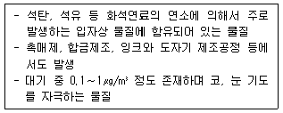
- 비소
- 아연
- 바나듐
- 다이옥신
(정답률: 62%)
16. 다음 대기분산모델 중 가우시안모델식을 적용하지 않은 것은?
- RAMS
- ISCST
- ADMS
- AUSPLUME
(정답률: 64%)
17. 다음 4종류의 고도에 따른 기온분포도 중 plume의 상하 확산폭이 가장 적어 최대착지거리가 큰 것은?
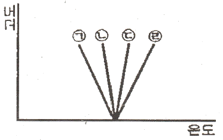
- ㉠
- ㉡
- ㉢
- ㉣
(정답률: 69%)
18. 다음 보기의 설명에 적합한 입자상 오염물질은?
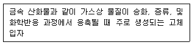
- 훈연(fume)
- 먼지(dust)
- 검댕(soot)
- 미스트(mist)
(정답률: 73%)
19. 다음 물질 중 오존파괴지수가 가장 낮은 것은?
- CCl4
- CFC-115
- Halon-2402
- Halon-1301
(정답률: 71%)
20. 다음 대기오염물질 중 2차 오염물질이 아닌 것은?
- O3
- NOCl
- H2O2
- CO2
(정답률: 79%)
2과목: 대기오염 공정시험 기준(방법)
21. 대기오염공정시험기준상 굴뚝 배출가스 중의 일산화탄소 분석방법으로 가장 거리가 먼 것은?
- 정전위 전해법
- 음이온 전극법
- 기체크로마토그래피
- 비분산형 적외선 분석법
(정답률: 78%)
22. 대기오염공정시험기준에서 정하고 있는 온도에 대한 설명으로 옳지 않은 것은?
- 실온 : 1∼35℃
- 온수 : 35∼50℃
- 냉수 : 15℃ 이하
- 찬 곳 : 따로 규정이 없는 한 0∼15℃의 곳
(정답률: 83%)
23. 기체크로마토그래피에 사용되는 검출기 중 미량의 유기물을 분석할 때 유용한 것은?
- 질소인 검출기(NPD)
- 불꽃이온화 검출기(FID)
- 불꽃 광도 검출기(FPD)
- 전자 포획 검출기(ECD)
(정답률: 76%)
24. 다음 중 환경대기 중의 탄화수소 농도를 측정하기 위한 시험방법과 가장 거리가 먼 것은?
- 총탄화수소 측정법
- 용융 탄화수소 측정법
- 활성 탄화수소 측정법
- 비메탄 탄화수소 측정법
(정답률: 76%)
25. 연료용 유류(원유, 경유, 중유) 중의 황함유량을 측정하기 위한 분석방법으로 옳은 것은? (단, 황함유량은 질량분율 0.01% 이상이다.)
- 광산란법
- 광투과율법
- 연소관식 공기법
- 전기화학식 분석법
(정답률: 71%)
26. 굴뚝 배출가스 중의 산소농도를 오르자트분석법으로 측정할 때 사용되는 탄산가스 흡수액은?
- 피로가롤 용액
- 염화제일동용액
- 물에 수산화포타슘을 녹인 용액
- 포화식염수에 황산을 가한 용액
(정답률: 72%)
27. 대기오염공정시험기준상 이온크로마토그래피의 장치에 관한 설명 중 ( )안에 알맞은 것은?
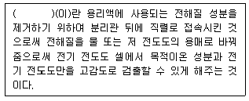
- 분리관
- 용리액조
- 송액펌프
- 써프렛서
(정답률: 83%)
28. 대기오염공정시험기준상 다음 보기가 설명하는 것은?
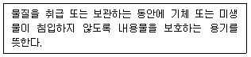
- 밀폐용기
- 기밀용기
- 밀봉용기
- 차광용기
(정답률: 77%)
29. 다음은 배출가스 중 벤젠분석방법이다. ( )안에 알맞은 것은?
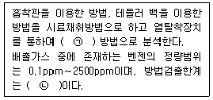
- ㉠ 원자흡수분광광도, ㉡ 0.03ppm
- ㉠ 원자흡수분광광도, ㉡ 0.07ppm
- ㉠ 기체크로마토그래피, ㉡ 0.03ppm
- ㉠ 기체크로마토그래피, ㉡ 0.07ppm
(정답률: 65%)
30. 냉증기 원자흡수분광광도법으로 굴뚝배출가스 중 수은을 측정하기 위해 사용하는 흡수액으로 ㅇ옳은 것은? (단, 흡수액의 농도는 질량분율이다.)
- 4% 과망간산포타슘, 10% 질산
- 4% 과망간산포타슘, 10% 황산
- 10% 과망간산포타슘, 4% 질산
- 10% 과망간산포타슘, 4% 황산
(정답률: 71%)
31. 대기오염공정시험기준상 굴뚝에서 배출되는 가스와 분석방법의 연결이 옳지 않은 것은?
- 암모니아 - 인도페놀법
- 염화수소 - 오르토톨리딘법
- 페놀 - 4-아미노 안티피린 자외선/가시선분광법
- 폼알데하이드 - 크로모트로핀산 자외선/가시선분광법
(정답률: 62%)
32. 대기오염공정시험기준상 원자흡수분광광도법에 대한 원리를 설명한 것으로 옳은 것은?
- 여기상태의 원자가 기저상태로 될 때 특유의 파장의 빛을 투과하는 현상 이용
- 여기상태의 원자가 이 원자 증기층을 투과하는 특유 파장의 빛을 흡수하는 현상 이용
- 기저상태에의 원자가 여기상태로 될 때 특유 파장의 빛을 투과하는 현상 이용
- 기저상태의 원자가 이 원자 증기층을 투과하는 특유 파장의 빛을 흡수하는 현상 이용
(정답률: 54%)
33. 굴뚝 단면이 상·하 동일 단면적의 직사각형 굴뚝의 직경 산출방법으로 옳은 것은? (단, 가로 : 굴뚝내부 단면 가로치수, 세로 : 굴뚝내부 단면 세로치수)
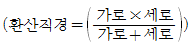
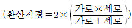
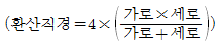
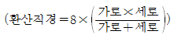
(정답률: 83%)
34. 다음은 굴뚝 배출가스 중 크롬화합물을 자외선/가시선분광법으로 측정하는 방법이다. ( )안에 알맞은 것은?
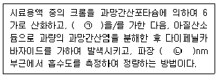
- ㉠ 요소, ㉡ 460
- ㉠ 요소, ㉡ 540
- ㉠ 아세트산, ㉡ 460
- ㉠ 아세트산, ㉡ 540
(정답률: 68%)
35. 다음은 시안화수소 분석에 관한 내용이다. ( )안에 가장 적합한 것으로 옳게 나열된 것은?
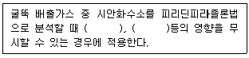
- 철, 동
- 알루미늄, 철
- 인산염, 황산염
- 할로겐, 황화수소
(정답률: 72%)
36. 굴뚝에서 배출되는 배출가스 중 암모니아를 중화적정법으로 분석하기 위하여 사용하는 흡수액으로 옳은 것은?(오류 신고가 접수된 문제입니다. 반드시 정답과 해설을 확인하시기 바랍니다.)
- 질산용액
- 붕산용액
- 염화칼슘용액
- 수산화소듐용액
(정답률: 63%)
37. 흡광 광도계에서 빛의 강도가 Io인 단색광이 어떤 시료용액을 통과할 때 그 빛의 90%가 흡수될 경우 흡광도는?
- 0.⑤
- 0.2
- 0.5
- 1.0
(정답률: 69%)
38. 대기오염공정시험기준상 링겔만 매연 농도표를 이용한 배출가스 중 매연 측정에 관한 설명으로 옳지 않은 것은?
- 농도표는 측정자의 앞 16cm에 놓는다.
- 매연의 검은 정도를 6종으로 분류한다.
- 링겔만 매연 농도표는 매연의 정도에 따라 색이 진하고 연하게 나타난다.
- 굴뚝배출구에서 30∼45cm 떨어진 곳의 농도를 측정자의 눈높이의 수직이 되게 관측 비교한다.
(정답률: 76%)
39. 농도 7%(w/v)의 H2O2 100mL가 이론상 흡수할 수 있는 SO2의 양(L)으로 옳은 것은?
- 약 0.1
- 약 0.5
- 약 1.2
- 약 4.6
(정답률: 36%)
40. 수산화소듐 20g을 물에 용해시켜 750mL로 제조하였을 때 이용액의 농도 (M)는?
- 0.33
- 0.67
- 0.99
- 1.33
(정답률: 61%)
3과목: 대기오염방지기술
41. 저위발열량 5000kcal/Sm3의 기체연료 연소 시 이론 연소온도(℃)는? (단, 이론 연소가스량은 20Sm3/Sm3, 연소가스의 평균정압비열은 0.35kcal/Sm3·℃이며, 기준온도는 실온(15℃)이며, 공기는 예열되지 않고, 연소가스는 해리되지 않는다.)
- 약 560
- 약 610
- 약 730
- 약 890
(정답률: 41%)
42. 다음 연료 중 일반적으로 착화온도가 가장 높은 것은?
- 목탄
- 무연탄
- 역청탄
- 갈탄(건조)
(정답률: 74%)
43. 입자상 물질에 대한 설명으로 옳지 않은 것은?
- 입경이 작을수록 집진이 어렵다.
- 단위 체적당 입자의 표면적은 입경이 작을수록 작아진다.
- 입자는 반드시 구형만은 아니고 선형, 부정형 등이 있다.
- 비중은 항상 일정한 값을 취하는 진비중과 입자의 집합 상태에 따라 달라지는 겉보기 비중으로 구별할 수 있다.
(정답률: 70%)
44. 먼지의 입경측정방법 중 주로 1㎛ 이상인 먼지의 입경측정에 이용되고, 그 측정 장치로는 앤더슨피펫, 침강천칭, 광투과장치 등이 있는 것은?
- 관성충돌법
- 액상 침강법
- 표준체 측정법
- Bacho 원심기체 침강법
(정답률: 57%)
45. 먼지의 입경(dp, ㎛)을 Rosin-Rammler 분포에 의해 체상분포 R(%)=100exp(-βdpn)으로 나타낸다. 이 먼지는 입경 35㎛ 이하가 전체의 약 몇 %를 차지하는가? (단, β=0.063, n=1)
- 11
- 21
- 79
- 89
(정답률: 36%)
46. 중량조성이 탄소 85%, 수소 15%인 액체연료를 매시 100kg 연소한 후 배출가스를 분석하였더니 분석치가 CO2 12.5%, CO 3%, O2 3.5%, N2 81% 이었다. 이 때 매 시간당 필요한 공기량(Sm3/h)은?
- 약 13
- 약 157
- 약 657
- 약 1271
(정답률: 42%)
47. 점도(Viscosity)에 관한 설명으로 옳지 않은 것은?
- 기체의 점도는 온도가 상승하면 낮아진다.
- 점도는 유체 이동에 따라 발생하는 일종의 저항이다.
- 액체인 경우 분자간 응집력이 점도의 원인이다.
- 일반적으로 액체의 점도는 온도가 상승함에 따라 낮아진다.
(정답률: 63%)
48. 사이클론의 운전조건이 집진율에 미치는 영향으로 옳지 않은 것은?
- 출구의 직경이 작을수록 집진율은 감소하고, 동시에 압력손실도 감소한다.
- 가스의 온도가 높아지면 가스의 점도가 커져 집진율은 저하되나 그 영향은 크지 않다.
- 원통의 길이가 길어지면 선회류 수가 증가하여 집진율은 증가하나 큰 영향은 미치지 않는다.
- 가스의 유입속도가 클수록 집진율은 증가하나, 10m/s 이상에서는 거의 영향을 미치지 않는다.
(정답률: 61%)
49. 다음 보기가 설명하는 송풍기의 종류로 가장 적합한 것은?
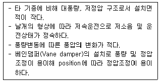
- 터보팬
- 다익 송풍기
- 레이디얼 팬
- 익형 송풍기
(정답률: 73%)
50. 흡수장치의 총괄이동 단위높이(HOG)가 1.0m이고, 제거율이 95%라면, 이 흡수장치의 높이(m)는 약 얼마인가?
- 1.2
- 3.0
- 3.5
- 4.2
(정답률: 55%)
51. 화학적 흡착과 비교한 물리적 흡착의 특성에 관한 설명으로 옳지 않은 것은?
- 흡착제의 재생이나 오염가스의 회수에 용이하다.
- 일반적으로 온도가 낮을수록 흡착량이 많다.
- 표면에 단분자막을 형성하며, 발열량이 크다.
- 압력을 감소시키면 흡착물질이 흡착제로부터 분리되는 가역적 흡착이다.
(정답률: 57%)
52. 염소농도가 200ppm인 배출가스를 처리하여 15mg/Sm3로 배출한다고 할 때, 염소의 제거율(%)은? (단, 온도는 표준상태로 가정한다.)
- 95.7
- 97.6
- 98.4
- 99.6
(정답률: 46%)
53. 연소조절에 의한 질소산화물(NOx) 저감대책으로 가장 거리가 먼 것은?
- 과잉공기량을 크게 한다.
- 2단 연소법을 사용한다.
- 배출가스를 재순환시킨다.
- 연소용 공기의 예열온도를 낮춘다.
(정답률: 73%)
54. 세정집진장치에 관한 설명으로 옳지 않은 것은?
- 타이젠와셔는 회전식에 해당한다.
- 입자포집원리로 관성충돌, 확산작용이 있다.
- 벤츄리스크러버에서 물방울 입경과 먼지 입경의 비는 5:1 정도가 좋다.
- 사용하는 액체는 보통 물이지만 특수한 경우에는 표면활성제를 혼합하는 경우도 있다.
(정답률: 74%)
55. 다음 보기가 설명하는 연소장치로 가장 적합한 것은?
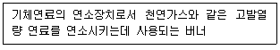
- 선회버너
- 건식버너
- 방사형버너
- 유압분무식 버너
(정답률: 61%)
56. 크기가 가로 1.2m, 세로 2.0m, 높이 1.5m인 연소실에서 저위발열량이 10000kcal/kg인 중유를 1.5시간에 100kg씩 연소시키고 있다. 이 연소실의 열 발생률(kcal/m3·h)은? (단, 연료의 완전연소하며, 연료 및 공기의 예열이 없고 연소실 벽면을 통한 열손실도 전혀 없다고 가정한다.)
- 약 165246
- 약 185185
- 약 277778
- 약 416667
(정답률: 63%)
57. 관성력 집진장치에 관한 설명으로 옳지 않은 것은?
- 충돌식과 반전식이 있으며, 고온가스의 처리가 가능하다.
- 관성력에 의한 분리속도는 회전기류반경에 비례하고, 입경의 제곱에 반비례한다.
- 집진 가능한 입자는 주로 10㎛ 이상의 조대입자이며, 일반적으로 집진율은 50∼70% 정도이다.
- 기류의 방향전환 각도가 작고, 방향전환 횟수가 많을수록 압력손실은 커지나 집진은 잘된다.
(정답률: 43%)
58. 세정식 집진장치 중 가압수식에 해당하는 것은?
- 충전탑
- 로터형
- 분수형
- S형 임펠러
(정답률: 69%)
59. 하루에 5톤의 유비철광을 사용하는 아비산제조 공장에서 배출되는 SO2를 NaOH용액으로 흡수하여 Na2SO3로 제거하려 한다. NaOH 용액의 흡수효율을 100%라 하면 이론적으로 필요한 NaOH의 양(톤)은? (단, 유비철광 중의 유황분 함유량은 20%이고, 유비철광 중 유황분은 모두 산화되어 배출된다.)
- 0.5
- 1.5
- 2.5
- 3.5
(정답률: 36%)
60. 아래 표는 전기로에 부설된 Bag filter의 유입구 및 유출구의 가스량과 먼지농도를 측정한 것이다. 먼지 통과율(%)로 옳은 것은?
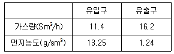
- 약 3.3
- 약 6.6
- 약 10.3
- 약 13.3
(정답률: 60%)
4과목: 대기환경 관계 법규
61. 대기환경보전법상 과태료의 부과기준으로 옳지 않은 것은?
- 일반기준으로서 위반행위의 횟수에 따른 부과기준은 최근 1년간 같은 위반행위로 과태료 부과처분을 받은 경우에 적용한다.
- 일반기준으로서 부과권자는 위반행위의 동기와 그 결과 등을 고려하여 과태료 부과금액의 80% 범위에서 이를 감경한다.
- 개별기준으로서 제작차배출허용기준에 맞지 않아 결함시정명령을 받은 자동차제작자가 결함시정 결과보고를 아니한 경우 1차 위반시 과태료 부과금액은 100만원이다.
- 개별기준으로서 제작차배출허용기준에 맞지 않아 결함시정명령을 받은 자동차제작자가 결함시정 결정보고를 아니한 경우 3차 위반시 과태료 부과금액은 200만원이다.
(정답률: 67%)
62. 대기환경보전법상 배출허용기준의 준수여부 등을 확인하기 위해 환경부령으로 지정된 대기오염도 검사기관으로 옳은 것은? (단, 국가표준기본법에 따른 인정을 받은 시험·검사기관 중 환경부장관이 정하여 고시하는 기관은 제외한다.)
- 지방환경청
- 대기환경기술진흥원
- 한국환경산업기술원
- 환경관리연구소
(정답률: 58%)
63. 대기환경보전법상 운행차의 정밀검사 방법·기준 및 검사대상 항목기준(일반기준)에 관한 설명으로 틀린 것은?
- 관능 및 기능검사는 배출가스검사를 먼저 한 후 시행하여야 한다.
- 휘발유와 가스를 같이 사용하는 자동차는 연료를 가스로 전환한 상태에서 배출가스검사를 실시하여야 한다.
- 운행차의 정밀검사는 부하검사방법을 적용하여 검사를 하여야 하지만, 상시 4륜구동 자동차는 무부하검사방법을 적용할 수 있다.
- 운행차의 정밀검사는 부하검사방법을 적용하여 검사를 하여야 하지만, 2행정 원동기 장착자동차는 무부하검사방법을 적용할 수 있다.
(정답률: 55%)
64. 대기환경보전법상 100만원 이하의 과태료 부과대상인 자는?
- 황함유기준을 초과하는 연료를 공급·판매한 자
- 비산먼지의 발생억제시설의 설치 및 필요한 조치를 하지 아니하고 시멘트·석탄·토사 등 분체상 물질을 운송한 자
- 배출시설 등 운영상황에 관한 기록을 보존하지 아니한 자
- 자동차의 원동기 가동제한을 위반한 자동차의 운전자
(정답률: 59%)
65. 대기환경보전법상 수도권대기환경청장, 국립환경과학원장 또는 한국환경공단이 설치하는 대기오염 측정망의 종류에 해당하지 않는 것은?
- 도시지역 또는 산업단지 인근지역의 특정대기유해물질(중금속을 제외한다)의 오염도를 측정하기 위한 유해대기물질 측정망
- 산성 대기오염물질의 건성 및 습성 침착량을 측정하기 위한 산성강하물측정망
- 도로변의 대기오염물질 농도를 측정하기 위한 도로변대기측정망
- 장거리이동 대기오염물질의 성분을 집중측정하기 위한 대기오염집중측정망
(정답률: 66%)
66. 대기환경보전법상 위임업무 보고사항 중 “측정기기 관리대행업의 등록, 변경등록 및 행정처분 현황”에 대한 유역환경청장의 보고 횟수 기준은?
- 수시
- 연 4회
- 연 2회
- 연 1회
(정답률: 48%)
67. 다음 중 대기환경보전법상 특정대기유해물질에 해당하는 것은?
- 오존
- 아크롤레인
- 황화에틸
- 아세트알데히드
(정답률: 54%)
68. 대기환경보전법상 Ⅲ지역에 대한 기본부과금의 지역별 부과계수는? (단, Ⅲ지역은 국토의 계획 및 이용에 관한 법률에 따른 녹지지역·관리지역·농림지역 및 자연환경보전지역이다.)
- 0.5
- 1.0
- 1.5
- 2.0
(정답률: 63%)
69. 대기환경보전법상 연료를 연소하여 황산화물을 배출하는 시설에서 연료의 황함유량이 0.5% 이하인 경우 기본부과금의 농도별 부과계수 기준으로 옳은 것은? (단, 대기환경보전법에 따른 측정 결과가 없으며, 배출시설에서 배출되는 오염물질 농도를 추정할 수 없다.)
- 0.1
- 0.2
- 0.4
- 1.0
(정답률: 55%)
70. 대기환경보전법상 환경부장관은 장거리이동 대기오염물질피해방지를 위하여 5년마다 관계중앙행정기관의 장과 협의하고 시·도지사의 의견을 들은 후 장거리이동대기오염물질 대책위원회의 심의를 거쳐 종합대책을 수립하여야 하는데, 이 종합대책에 포함되어야 하는 사항으로 틀린 것은?
- 종합대책 추진실적 및 그 평가
- 장거리이동대기오염물질피해 방지를 위한 국내 대책
- 장거리이동대기오염물질피해 방지 기금 모금
- 장거리이동대기오염물질 발생 감소를 위한 국제협력
(정답률: 71%)
71. 악취방지법상 위임업무 보고사항 중 “악취검사기관의 지정, 지정사항 변경보고 접수 실적”의 보고 횟수 기준은? (단, 보고자는 국립환경과학원장으로 한다.)
- 연 1회
- 연 2회
- 연 4회
- 수시
(정답률: 59%)
72. 대기환경보전법상 “기타 고체연료 사용시설”의 설치기준으로 틀린 것은?
- 배출시설의 굴뚝높이는 100m 이상이어야 한다.
- 연료와 그 연소재의 수송은 덮개가 있는 차량을 이용하여야 한다.
- 연료는 옥내에 저장하여야 한다.
- 굴뚝에서 배출되는 매연을 측정할 수 있어야 한다.
(정답률: 71%)
73. 환경정책기본법상 대기환경기준이 설정되어 있지 않는 항목은?
- O3
- Pb
- PM-10
- CO2
(정답률: 61%)
74. 환경정책기본법상 일산화탄소의 대기환경 기준으로 옳은 것은?
- 1시간 평균치 25ppm 이하
- 8시간 평균치 25ppm 이하
- 24시간 평균치 9ppm 이하
- 연간 평균치 9ppm 이하
(정답률: 51%)
75. 다음 중 대기환경보전법상 대기오염경보에 관한 설명으로 틀린 것은?
- 대기오염경보 대상 지역은 시·도지사가 필요하다고 인정하여 지정하는 지역으로 한다.
- 환경기준이 설정된 오염물질 중 오존은 대기오염경보의 대상오염물질이다.
- 대기오염경보의 단계별 오염물질의 농도기준은 시·도지사가 정하여 고시한다.
- 오존은 농도에 따라 주의보, 경보, 중대경보로 구분한다.
(정답률: 67%)
76. 대기환경보전법상 초과부과금 산정기준에서 다음 오염물질 중 1kg당 부과금액이 가장 높은 것은?
- 이황화탄소
- 먼지
- 암모니아
- 황화수소
(정답률: 65%)
77. 다음 중 대기환경보전법상 휘발성 유기화합물 배출규제대상 시설이 아닌 것은?
- 목재가공시설
- 주유소의 저장시설
- 저유소의 저장시설
- 세탁시설
(정답률: 78%)
78. 대기환경보전법상 대기오염방지시설이 아닌 것은?
- 흡수에 의한 시설
- 소각에 의한 시설
- 산화·환원에 의한 시설
- 미생물을 이용한 처리시설
(정답률: 60%)
79. 대기환경보전법상 자동차연료 제조기준 중 경유의 황함량 기준은? (단, 기타의 경우는 고려하지 않음)
- 10ppm 이하
- 20ppm 이하
- 30ppm 이하
- 50ppm 이하
(정답률: 60%)
80. 대기환경보전법상 신고를 한 후 조업 중인 배출시설에서 나오는 오염물질의 정도가 배출허용기준을 초과하여 배출시설 및 방지시설의 개선명령을 이행하지 아니한 경우의 1차 행정처분기준은?
- 경고
- 사용금지명령
- 조업정지
- 허가취소
(정답률: 44%)